Understanding Knowledge Networks
Abstract
The emergence of Linked Open Data (LOD) enables data on the Web to have a well defined structure and thereby to represent and interlink information from different sources and application areas. This web of data is a complex socially created network, where concepts and relations are connected in intricate ways, collectively forming a network of knowledge. These data are published in a decentralized fashion and they stem from different sources, have different types of relationships, and use different terminologies, ontologies and meta models. While this so-called LOD cloud has become a very valuable resource, we know only very little about the general structural properties of the contained data, which impedes our ability to use and organize this resource in an efficient and accurate manner. The objective of this paper is to provide a basic understanding of LOD from the point of view of network structures. We analyze LOD networks with respect to fundamental network properties such as degree distribution and clustering. Using these metrics, we compare our results to non-LOD networks, such as email, Web, and protein networks, that have been reported in the literature. Our results show that the LOD cloud exhibits a broad variety of different network structures, consistent with the diversity found in other types of networks.
Keywords
- Linked Data
- Network structure
- Knowledge network
Introduction
The Linked Open Data (LOD) cloud has grown to huge dimensions in the recent past, currently consisting of tens of billion triples [3]. The LOD cloud can be seen as a huge, decentralized network of knowledge consisting of statements in many different domains. While this resource of open Linked Data has proved to be very valuable in a wide variety of problems [4], we have largely remained ignorant about the structural properties of this data.
In graph theory terms, it is a directed network of nodes (represented by URIs and typed string literals), interconnected by labeled, directed edges (where these labels are URIs too). In a certain sense, each label (i.e. RDF property) can be seen to represent its own network. The LOD cloud includes networks about, for example, friend relationships, geographical inclusion, and relatedness of concepts. The structural properties of these networks are important in many different respects. Scale-free networks, for example, have shown to be tolerant to random errors, but vulnerable to targeted attacks [1], and the network structure of Linked Data is known to impact distributed reasoning [18]. Our current technologies and insights will therefore benefit from a better understanding of the fundamental properties of such knowledge networks, of their common properties and their variety, and of their difference to other network types that have been studied in the past.
In the study presented here, we want to discover the quantitative properties of the networks found in the Linked Open Data cloud. We are particularly interested in how uniform or different they are, whether they all exhibit similar network structures or whether there is a great variety. Finally, we want to compare these network properties to "real-world" networks, as they have been reported in the literature. Do knowledge networks, as we call them, found in the Linked Open Data cloud have a different structure than other types of networks that have been investigated so far?
Background
Linked Open Data is one of the largest data sources on the Web, including big datasets such as DBpedia [14], and it is growing at a fast pace [21,19]. This data source is by definition distributed and therefore difficult to access and handle in its entirety. However, the recent development of the LOD Laundromat platform [2] provides a centralized and uniform access to a cleansed and harmonized version of a comprehensive collection of Linked Data. It also comes with a simple yet powerful command-line interface, called Frank, which facilitates new ways of conducting research and experiments on Linked Open Data [19,20].
Various studies have been conducted on how the Linked Open Data cloud can be better explored and interlinked [9,10]. Other studies investigate how holistic graph analysis can be performed on RDF triple stores, including network properties such as degree distribution, clustering coefficient, connected component analysis, and node eccentricity [13], and how such network metrics can be used to assess the quality of links [8].
Outside of the Linked Open Data domain, many real-world networks have been analyzed in the past, including router networks, the Web, protein interaction networks, metabolic networks, and emails [5]. Further existing research includes, for example, the study of the degree distributions of growing networks [11], of theoretical graph properties of brain networks [6], of the clustering in social networks [16], and of the spread of ideas through the scientific citation graph [12].
Little is known about the information-theoretic properties of real-world RDF data. Several structural properties of RDF data are known to follow a power-law distribution. This includes the size of RDF documents, the frequency with which terms occur and the frequency with which schema resources (properties and classes) occur in the data [7,17,22]. Even though these observations have been relatively limited, they are already used as heuristics in the implementation of triple stores and data compressors.
Approach and Methods
To analyze the structure and variety of knowledge networks, we focus our study on the following eight network properties, which cover all important and generally established basic network metrics: the average degree of nodes (i.e. average number of incoming and outgoing edges), the average local clustering coefficient (i.e. average chance of two neighbors of a given node being connected too), the global clustering coefficient (i.e. ratio of three connected nodes being fully connected), the number of connected components (i.e. subsets of a network where each node is directly or indirectly linked to every other node in the subset), the α exponent of a power-law fit as an indication of a scale-free network, whether the network is bi-partite or not (i.e. whether the nodes can be divided into two disjoint classes A and B, such that all edges point from A to B and never the other way round), the Gini coefficient of the degree distribution (i.e. the inequality of the degree distribution), and the Gini coefficient of the component size distribution (i.e. the inequality of the component sizes).
| RDF property | Description |
|---|---|
| foaf:knows | "A person known by this person (indicating some level of reciprocated interaction between the parties)." |
| geop:hasBorderWith | Borders among countries according to the United Nations |
| osspr:contains | "The interior of one object completely contains the interior of the other. Their boundaries may or may not intersect." (inverse of osspr:within) |
| osspr:within | "The interior of one object is completely within the interior of the other object. Their boundaries may or may not intersect." (inverse of osspr:contains) |
| swrc:affiliation | Mapping of organizations to affiliated entities (e.g. employees) |
| lexinfo:partofspeech | "Term used to describe how a particular word is used in a sentence." |
| gn:parentCountry | "parent country" |
| tag:associatedTag | "The object is a Tag which plays a role in the subject Tagging." |
To calculate these metrics, we picked a number of widely used RDF properties from various vocabularies and domains, attempting to capture the variety of Linked Data (but at this point without claiming representativeness of the sample). We chose foaf:knows as a representative of a property on social relations, geop:hasBorderWith as a property of geographical proximity, osspr:contains/osspr:within as an example of relations about hierarchical inclusions, and swrc:affiliation as a social/organizational network. For comparison and exploration, we also included three properties for which we did not expect to find interesting network structures, because their semantics do not seem to describe a relation that would form a complex network: lexinfo:partOfSpeech, which maps words to their roles in a sentence, gn:parentCountry, which links geographical entities to the containing countries, and tag:associatedTag, which maps concepts to tag strings. Table 1 shows an overview of these selected properties with their official descriptions.
In addition, we look at a number of properties from the well-known and popular SKOS (Simple Knowledge Organization System) ontology [15]. Specifically, skos:narrower specifies a given concept to be in some sense less general than a given more general concept, whereas skos:related states that two concepts are related without marking one or the other as more general. Similarly, skos:closeMatch, skos:exactMatch, skos:broadMatch, skos:narrowMatch, and skos:relatedMatch establish links between concepts, but these so called mapping relations establish links across different concept schemes. For comparison, we also add skos:hasTopConcept, which maps concept schemes to their top concepts, and for which we do not expect to find complex network structures.
On the technical side, we retrieve the instances of these RDF properties from the Linked Open Data cloud by the use of the LOD Laundromat via the Frank tool [19]. We download the triples in N-Quads format, which we transform then in a straight-forward way using a SWI Prolog program into the Graph Modeling Language (GML) for further processing. We then use the igraph package of R Studio to calculate the different network metrics. Gephi is used with its OpenOrd plugin to visualize the networks.
Standard R commands are used to calculate the metrics, specifically ecount, vcount, degree, transitivity (for clustering coefficients), components (to calculate weak components), and bipartite_mapping, and ineq (for inequality analysis using the Gini coefficient). A power law fit is performed on the degree distribution (Kolmogorov-Smirnov test) with the command fit_power_law. A power law exponent α between 2 and 3 is typical for scale-free networks (even though not sufficient to determine their scale-free nature).
Results
Below we present the results of our analyses. We explain the sizes of the analyzed networks, show visualizations of them, describe them in terms of the introduced metrics, and finally compare these numbers to results that have been reported in the existing literature.
Network Sizes
Table 2 shows the sizes of the analyzed networks in terms of numbers of documents, nodes, and edges. The number of documents denotes from how many data documents the respective triples were retrieved, i.e. it measures the distributedness of the network. This number varies from just 10 to more than 6000. In terms of classical network terms of nodes and edges, these networks range from just 132 nodes and 229 edges in the case of geop:hasBorderWith to more than 1.7 million nodes and more than 2.3 million edges in the case of foaf:knows. In the latter case, even the subset of triples that originated from the Last.fm platform is still larger than most other analyzed datasets with more than 300'000 nodes and more than 400'000 edges.
| Network | Documents | Nodes | Edges | Size Class |
|---|---|---|---|---|
| foaf:knows | 421 | 1776554 | 2374275 | Large |
| foaf:knows (Last.fm) | 310 | 315765 | 469361 | Large |
| geop:hasBorderWith | 13 | 132 | 229 | Small |
| osspr:contains | 94 | 7736 | 10098 | Medium |
| osspr:within | 26 | 16623 | 28544 | Medium |
| swrc:affiliation | 508 | 12860 | 12366 | Medium |
| lexinfo:partOfSpeech | 10 | 60700 | 60678 | Medium |
| gn:parentCountry | 14 | 197117 | 197115 | Large |
| tag:associatedTag | 328 | 27469 | 25670 | Medium |
| skos:related | 818 | 208076 | 300250 | Large |
| skos:narrower | 5848 | 181261 | 169489 | Large |
| skos:relatedMatch | 395 | 33862 | 34546 | Medium |
| skos:broadMatch | 45 | 9304 | 7207 | Small |
| skos:narrowMatch | 42 | 1807 | 1338 | Small |
| skos:closeMatch | 419 | 328877 | 254703 | Large |
| skos:exactMatch | 5901 | 263291 | 213306 | Large |
| skos:hasTopConcept | 5854 | 26180 | 25304 | Medium |
Visualizations
Network visualizations can be very helpful to get a feeling of the network structures and as an exploratory aid. Figure 1 shows the visualizations of the first part of the analyzed networks. The full foaf:knows network was too large to visualize, which is why we can only show here a visualization of its Last.fm subset.
| foaf:knows (Last.fm subset)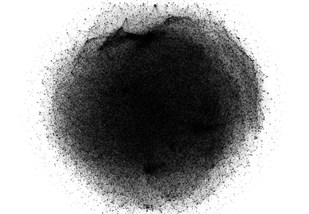 | geop:hasBorderWith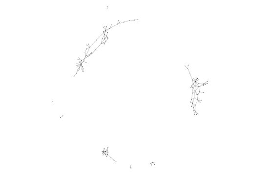 | osspr:contains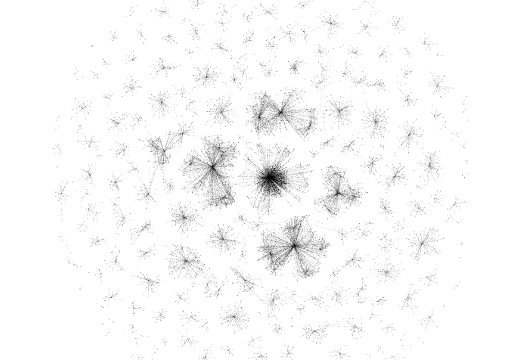 |
| osspr:within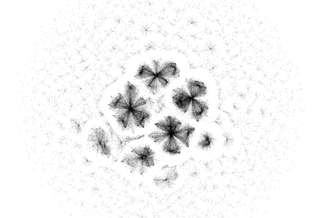 | swrc:affiliation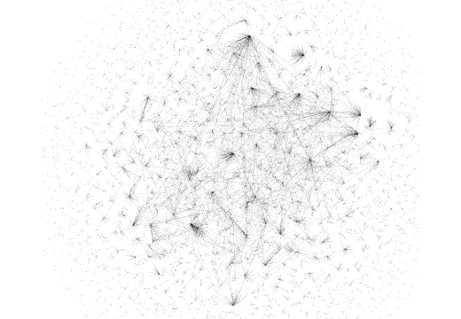 | lexinfo:partOfSpeech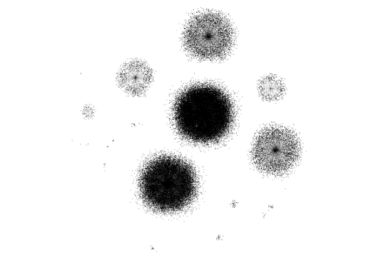 |
| gn:parentCountry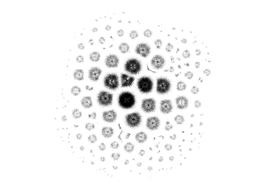 | tag:associatedTag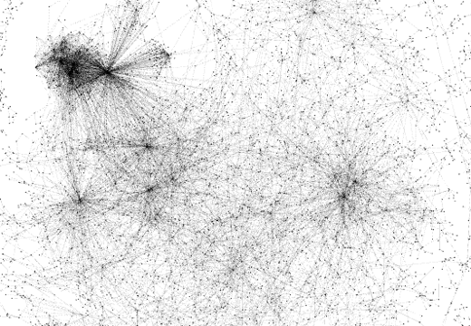 |
The variety of appearance of the networks through these visualizations is striking. Social, geographical, and containment relations each exhibit a very particular and clearly distinguishable form. The two relations osspr:contains and its inverse osspr:within, which are semantically identical apart from their direction (which was not taken into account by the visualization algorithm), show similar visual features but are nevertheless clearly different in their structure. lexinfo:partOfSpeech and gn:parentCountry, as expected, do not exhibit proper network structures, but instead show large and small groups around central objects. These central objects are of course the part of speech categories and countries, respectively. The case of tag:associatedTag, however, gave us a surprising result. We expected this network to be as monotonic as the previous two, but to our surprise it seems to possess a complex network structure. The explanation for this is that seemingly basic relations (from a network point of view), such as a relation between concepts and their informal tags, can lead to complex networks if the relation is many-to-many. Concepts are indirectly linked to related concepts via their overlapping tags, thereby establishing a kind of relatedness network, which can exhibit complex structures.
| skos:related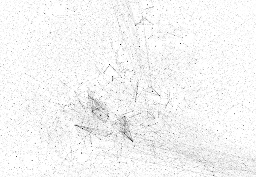 | skos:narrower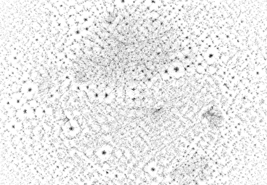 | skos:relatedMatch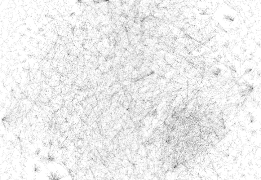 |
| skos:broadMatch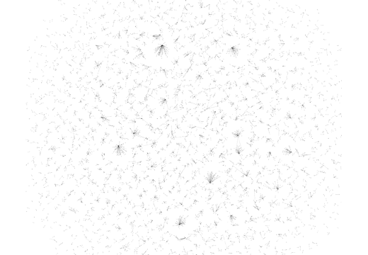 | skos:narrowMatch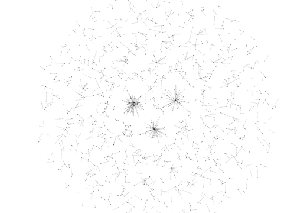 | skos:closeMatch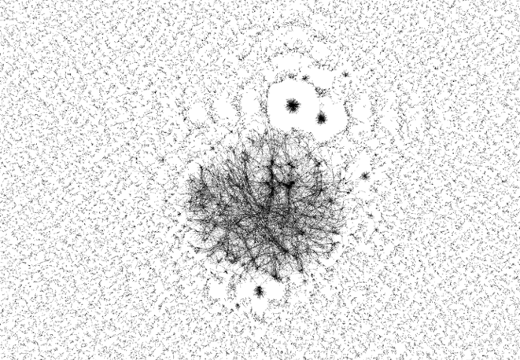 |
| skos:exactMatch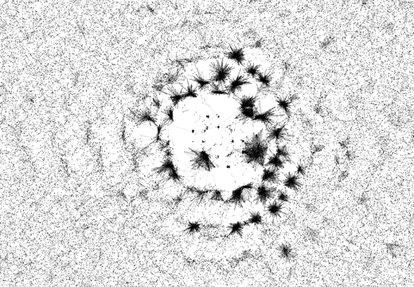 | skos:hasTopConcept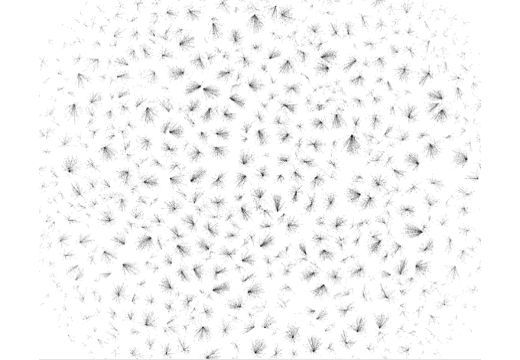 |
The RDF properties discussed above stem from different vocabularies, which were defined by different people and are used by different user groups. To find out whether the observed variety is possibly explained by these differences alone, we can look at the different relations from the SKOS vocabulary, which were all defined by the same people and presumably used by the same user groups. Figure 2 shows the visualizations of the chosen SKOS properties. While not quite as varied as the examples shown above, they nevertheless exhibit a striking variety of network structures.
Metrics
Visualization are good for exploration and for getting an intuitive feeling of the networks, but we now need an objective analysis by quantitative measures. Table 5 shows the results for the chosen network metrics that were introduced above.
| Clustering coefficient | Inequality | |||||||
|---|---|---|---|---|---|---|---|---|
| Network | Size | Avg. degree | Local | Global | Bi-partite? | Power-law α | Degree dist. | Comp. size |
| foaf:knows | Large | 2.673 | 0.1017 | 0.0116 | No | 1.992 | 0.6047 | 0.7783 |
| foaf:knows (Last.fm) | Large | 2.973 | 0.0932 | 0.0046 | No | 2.020 | 0.6095 | 0.9911 |
| geop:hasBorderWith | Small | 3.470 | 0.3920 | 0.2304 | No | 4.559 | 0.4179 | 0.6174 |
| osspr:contains | Medium | 2.611 | 0.6667 | 0.0076 | No | 1.9985 | 0.5696 | 0.7079 |
| osspr:within | Medium | 3.434 | 0.6512 | 0.0065 | No | 1.8653 | 0.5696 | 0.7286 |
| swrc:affiliation | Medium | 1.923 | 0.0 | 0.0 | No | 2.453 | 0.4305 | 0.6845 |
| lexinfo:partOfSpeech | Medium | 1.999 | 0.0 | 0.0 | Yes | 1.0277 | 0.4998 | 0.8949 |
| gn:parentCountry | Large | 2.000 | 0.0 | 0.0 | No | 1.253 | 0.5000 | 0.9032 |
| tag:associatedTag | Medium | 1.869 | 0.0 | 0.0 | Yes | 3.0444 | 0.4064 | 0.3638 |
| skos:related | Large | 2.886 | 0.2624 | 0.1119 | No | 2.857 | 0.4864 | 0.4862 |
| skos:narrower | Large | 1.87 | 0.0304 | 0.002 | No | 2.8528 | 0.4273 | 0.7326 |
| skos:relatedMatch | Medium | 2.040 | 1.41E-04 | 2.03E-05 | No | 3.4793 | 0.3846 | 0.5465 |
| skos:broadMatch | Small | 1.549 | 0.0 | 0.0 | Yes | 3.3594 | 0.3248 | 0.3961 |
| skos:narrowMatch | Small | 1.481 | 0.0 | 0.0 | Yes | 2.1632 | 0.2898 | 0.2790 |
| skos:closeMatch | Large | 1.549 | 2.14E-04 | 1.01E-04 | No | 3.1513 | 0.2808 | 0.2620 |
| skos:exactMatch | Large | 1.620 | 0.0878 | 0.1758 | No | 3.212 | 0.3458 | 0.1940 |
| skos:hasTopConcept | Medium | 1.933 | 0.0 | 0.0 | Yes | 1.7919 | 0.4754 | 0.5665 |
The average degree ranges from 1.48 for skos:narrowMatch to above 3.4 for geop:hasBorderWith and osspr:within. As expected, our examples for comparison, lexinfo:partOfSpeech, gn:parentCountry, tag:associatedTag, and skos:hasTopConcept, show a bipartite network structure (i.e. no entities show up on both sides of the relation) or have at least zero or near-zero clustering coefficients. The remaining relations show a relatively broad range of clustering behavior up to around 0.65 for osspr:contains and osspr:within on the average local clustering coefficient, and up to 0.23 for the global coefficient and geop:hasBorderWith.
Three networks exhibit an α exponent of a power law fit between 2 and 3, which is an indication of a scale-free structure: the Last.fm subset of foaf:knows, swrc:affiliation, skos:related, skos:narrower, and skos:narrowMatch. In addition, the full foaf:knows network, osspr:contains, and tag:associatedTag are outside but very close to the boundary values. Further investigation would be needed, however, to reliably determine whether these networks are indeed scale-free.
The inequality measures in the form of the Gini coefficient on the degree distribution show that this distribution ranges from fairly equal for some of the SKOS predicates to fairly unequal in the case of foaf:knows. An even wider variety is manifested for the inequality with respect to the size of the network's connected components. From highly unequal (because one giant component includes almost all nodes in the network), such as 0.99 for the Last.fm subset of foaf:knows, to very equal in the case of skos:exactMatch with a value of 0.19.
Comparison
So far, we have seen a large variety of results for the chosen network metrics in the LOD cloud, but we do not know so far how this variety compares to non-LOD networks, which have been studied extensively. For this comparison, we use nine well-studied networks that have been summarized in the literature, including their average degrees and average local clustering coefficient [5]. These networks include a social network of actors, the link structure of the Web, protein interactions, and server networks.
Figure 3 shows the comparison between LOD networks and non-LOD networks with respect to their average degree (note the logarithmic y-axis). A majority of the other networks have a higher average degree than any of the analyzed LOD networks. Only four LOD networks have an average degree that is higher than the lowest of the non-LOD ones. Therefore, while LOD networks show a relatively wide range of average degrees, they do not reach near the top of the scale. This can be explained by the fact that LOD networks are by design incomplete (everybody is free to add more nodes and edges), whereas the other networks stem from data with stronger completeness claims.
Figure 4 shows the same kind of comparison, but now with respect to the average local clustering coefficient. We see that the LOD networks in this case, apart from the bi-partite or almost bi-partite networks (for which the clustering coefficient is a meaningless metric), spread over the given range much more evenly. While they still do not reach to the very top, they come in this case at least close to it. Unfortunately, there is no data available for the non-LOD networks with respect to the remaining network metrics. Therefore such comparisons are at the moment only possible for the given two metrics.
Discussion and Conclusions
We have shown that there is a large variety of network structures in the LOD cloud. Their visualizations show striking differences, and sometimes the structure of a given network is hard to anticipate and the results can be surprising, which underscores the importance of our work. While the observed metrics are similar to some other networks reported in the literature, their distributions seem to be slightly different, which might be due to LOD's lack of completeness.
The study of the degree of completeness and its consequences is in fact one of our future plans. We furthermore plan to conduct studies that take the directedness of LOD networks into account, instead of analyzing them only as if they were undirected networks. A further important point to consider in the future are entailed relations. Our two networks for osspr:within and osspr:contains, for example, entail each other, as they are defined as inverse properties. They therefore form just one network on the semantic level. Similarly, the different SKOS properties, as many other LOD properties, are arranged in a hierarchy, and their relation instances can therefore be inferred in well-defined cases, even if the instance has not been explicitly asserted.
It is clear that the analyses shown in this paper have just scratched the surface, and there is much more to analyze and understand. We hope that our work can provide a basis for such future endeavors.
References
- Albert, R., Jeong, H., & Barabási, A. L. (2000). Error and attack tolerance of complex networks. nature, 406(6794), 378-382.
- Beek, W., Rietveld, L., Bazoobandi, H. R., Wielemaker, J., & Schlobach, S. (2014). LOD laundromat: a uniform way of publishing other people’s dirty data. In The Semantic Web–ISWC 2014 (pp. 213-228). Springer International Publishing.
- Beek, W., Rietveld, L., Schlobach, S., & van Harmelen, F. (2016). LOD Laundromat: Why the Semantic Web Needs Centralization (Even If We Don't Like It). IEEE Internet Computing, 20(2), 78-81.
- Bizer, C., Heath, T., & Berners-Lee, T. (2009). Linked data-the story so far. Semantic Services, Interoperability and Web Applications: Emerging Concepts, 205-227.
- Boccaletti, S., Latora, V., Moreno, Y., Chavez, M., & Hwang, D. U. (2006). Complex networks: Structure and dynamics. Physics reports, 424(4), 175-308.
- Bullmore, E., & Sporns, O. (2009). Complex brain networks: graph theoretical analysis of structural and functional systems. Nature Reviews Neuroscience,10(3), 186-198
- Ding, L. & Finin, T. (2006). Characterizing the Semantic Web on the Web. The Semantic Web -- ISWC, Springer, 242-257.
- Guéret, C., Groth, P., Stadler, C., & Lehmann, J. (2012). Assessing Linked Data Mappings Using Network Measures. The Semantic Web: Research and Applications, 87–102.
- Jain, P., Hitzler, P., Sheth, A. P., Verma, K., & Yeh, P. Z. (2010). Ontology alignment for linked open data. In The Semantic Web–ISWC 2010 (pp. 402-417). Springer Berlin Heidelberg.
- Khatchadourian, S., & Consens, M. (2010). ExpLOD: Summary-based exploration of interlinking and RDF usage in the linked open data cloud. The Semantic Web: Research and Applications, 272-287.
- Krapivsky, P. L., Rodgers, G. J., & Redner, S. (2001). Degree distributions of growing networks. Physical Review Letters, 86(23), 5401.
- Kuhn, T., Perc, M., & Helbing, D. (2014). Inheritance Patterns in Citation Networks Reveal Scientific Memes. Physical Review X, 4(4). doi:10.1103/physrevx.4.041036
- Lee, S., Sukumar, S. R., Hong, S., & Lim, S.-H. (2016). Enabling graph mining in RDF triplestores using SPARQL for holistic in-situ graph analysis. Expert Systems with Applications, 48, 9–25. doi:10.1016/j.eswa.2015.11.010
- Lehmann, J., Isele, R., Jakob, M., Jentzsch, A., Kontokostas, D., Mendes, P. N., ... & Bizer, C. (2014). DBpedia-a large-scale, multilingual knowledge base extracted from Wikipedia. Semantic Web Journal, 5, 1-29.
- Miles, A. & Bechhofer, S. (2009) SKOS Simple Knowledge Organization System Reference. W3C Recommendation 18 August 2009. https://www.w3.org/TR/skos-reference/
- Opsahl, T. (2013). Triadic closure in two-mode networks: Redefining the global and local clustering coefficients. Social Networks, 35(2), 159-167.
- Oren, E., Delbru, R., Catasta, M., Cyganiak, R., Stenzhorn, H., & Tummarello, G. (2008). Sindice.com: A Document-oriented Lookup Index for Open Linked Data. International Journal of Metadata, Semantics and Ontologies, 3(1), 37-52.
- Oren, E., Kotoulas, S., Anadiotis, G., Siebes, R., ten Teije, A., & van Harmelen, F. (2009). Marvin: Distributed reasoning over large-scale Semantic Web data. Web Semantics: Science, Services and Agents on the World Wide Web, 7(4), 305–316. doi:10.1016/j.websem.2009.09.002
- Rietveld, L., Beek, W., & Schlobach, S. (2015). LOD Lab: Experiments at LOD Scale. In The Semantic Web-ISWC 2015 (pp. 339-355). Springer International Publishing.
- Rietveld, L., Beek, W., Schlobach, S.: Meta-Data for a lot of LOD. Semantic Web. 2016
- Rietveld, L., Hoekstra, R., Schlobach, S., & Guéret, C. (2014). Structural Properties as Proxy for Semantic Relevance in RDF Graph Sampling. In The Semantic Web–ISWC 2014 (pp. 81-96). Springer International Publishing.
- Theoharis, Y., Tzitzikas, Y., Kotzinos, D., & Christophides, V. (2008). On Graph Features of Semantic Web schemas. IEEE Transactions on Knowledge and Data Engineering, 20(5), 692-702.